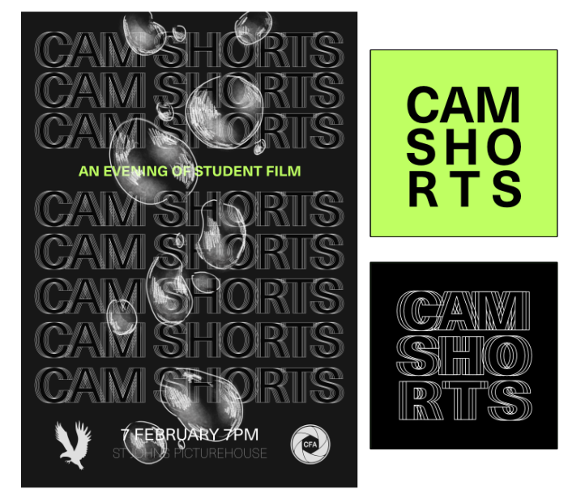
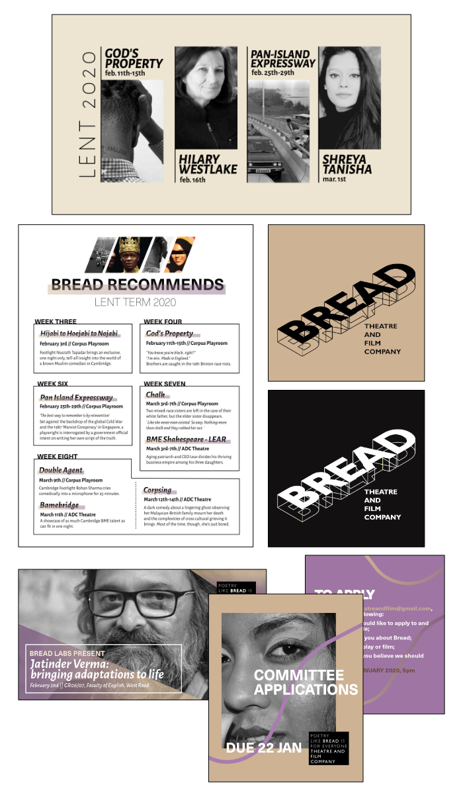
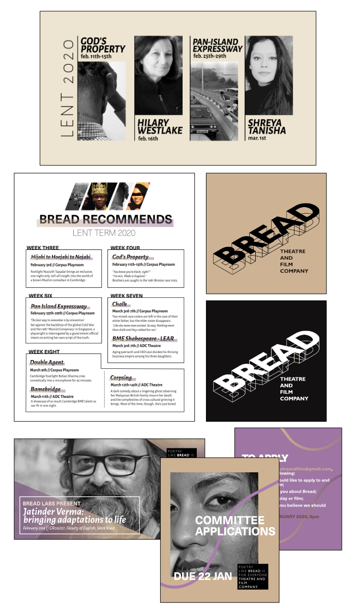
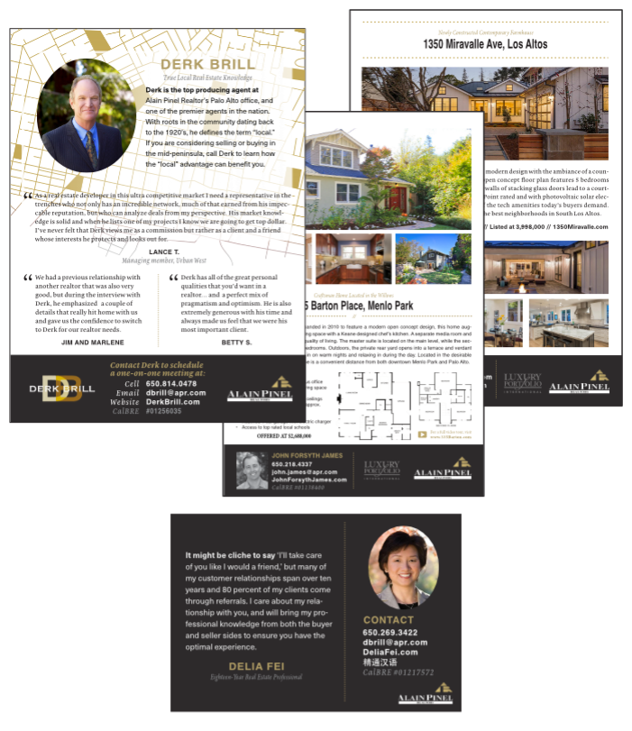

LINDA
J--W--
YU
Hello! I am a writer and designer interested in government regulation and the impact of art on society. I've written for Today in Tabs and designed for The Mays. I recently graduated from the University of Cambridge with a degree in History and Politics.
-
About
-
2021 Interned at the media newsletter Today in Tabs where I wrote on topics such as:
>An analysis of Big Data, my own big data
> An obituary for a shuttered Hong Kong tabloid
> The King's Living Image and COVID Catholicism
> Thai royals gossip and masked authoritarianism
> New genetic theories of Domestication Syndrome
> The third arm in neuropsychology and military projects
> Coffee and encroaching modernity in Bangalore
> Sikh uncle turbans and the global fashion supply chain
>Chinese philosophy and mesopelagic fish
>Chinese Political Memes, frogs and the Politburo
>Aztecs, human sacrifice, and Fraternities
>Late Imperial Russian Secret Police and Navalny
>Drama in the field of pure maths
>Antarctic and Southern Cone politics
>Human Parthenogenesis and miraculous birth
>Robot proxy-wars on Wikipedia
>Parrots, Welsh language preservation, and immigration
>A kidnapping in South India2021 Created editorial content and proofread interviews for The Browser.
> Piracy, Tourette's, Snakes, Spots, War
> Stone, Tectonics, Incas, Counterfeits, Svärdstav
> Jon Ingold on translating archeology into video games
2012-2014 Wrote and copyedited articles as a writer and staff editor at the Duke University Chronicle.
> Narrative feature article written about a late night cab driver.
> News article on a pastor-led protest
-
2020-2021 Cover design and 200 page interior for volume 28 of the Cambridge and Oxford literary and art journal The Mays.
Publicity visuals to solicit submissions utilising art from the previous issue.

2022 A personal project where I created ebook cover designs based on a series of prompts.

Based off the concept of "A story anthology set in Late Imperial Russia," I was inspired by traditional Russian embroidery and tapestries when creating the illustration.
The concept was "A novel about an international war reporter." I wanted to evoke the feeling of long distance travel through the view of plane windows. Instead of using photographs, each window illustration was hand drawn in colour before being photomanipulated into a grainy black and white.

Based off the idea of "A fantasy novel about an imperial princess third in line for the throne clawing to the top."

"A trilogy of novels about a lady's companion forced to deal with the cruelties of life as a servant." Additionally, I was given the stipulation of using pre-Raphelite art as an inspiration.
2020 Poster and flyers created for the ADC play Chalk.

2020 Poster and logo created for the Cambridge Short student film festival.
2020 Poster the ADC Theatre standup show Hijabi to Hoejabi to Nojabi.

2019-2020 Design and materials for a theatre company focused on funding and producing diverse shows.
 

2019 Stamp themed print campaign for the ADC Theatre stage show Second Generation. Sticker set (instead of flyers) and A1/A3 posters.

2015-2017 Sample of print advertising work created for agents at Alain Pinel Realtors based on a standard house style.
2012-2014 Designed various issues of the Duke Unversity Chronicle as a member of the design staff.

-
Condensed compilation of illustration work, some personal and some created as op-ed illustrations in the newspaper Varsity.

-
I was born in Sunnyvale, California during the spring of 1994. Since then I have lived in Oregon, North Carolina, Shanghai, and Cambridgeshire. I enjoy deep dives into niche subjects, luchadores, and wide-legged trousers.

CONTACT lindajwyu [at] gmail.com